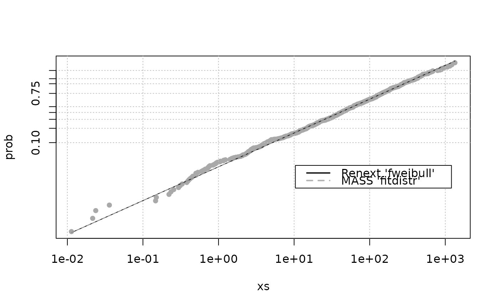

ML estimation of classical Weibull distribution
fweibull.RdFast Maximum Likelihood estimation of the classical two parameters Weibull distribution.
Arguments
- x
-
Sample vector to be fitted. Should contain only positive non-NA values.
- info.observed
-
Should the observed information matrix be used or the expected one be used?
- scaleData
-
Should the data be scaled before estimation? If
TRUE, the observations inx(which are positive) are divided by their mean value. The results are in theory not affected by this transformation, but scaling the data could improve the estimation in some cases. - cov
-
Should the covariance of estimates be computed?
- check.loglik
-
If
TRUE, the log-likelihood is recomputed usingdweibullfunction withlog = TRUE. The result is returned as a list element.
Details
The ML estimates are obtained thanks to a reparameterisation with
\(\eta = scale^{1/shape}\) in place of
shape. This allows the maximisation of a one-dimensional
likelihood \(L\) since the \(\eta\) parameter can be
concentrated out of \(L\). This also allows the determination of
the expected information matrix for
\([shape,\,\eta]\) rather than the usual
observed information.
Value
A list
- estimate
-
Parameter ML estimates.
- sd
-
The (asymptotic) standard deviation for estimate.
- cov
-
The (asymptotic) covariance matrix computed from theoretical or observed Information matrix.
- eta
-
The estimated value for eta.
Note
The default value of info.observed was set to TRUE from
version 3.0-1 because standard deviations obtained with this
choice are usually better.
See also
weibplot for Weibull plots.
Examples
n <- 1000
set.seed(1234)
shape <- 2 * runif(1)
x <- 100 * rweibull(n, shape = 0.8, scale = 1)
res <- fweibull(x)
## compare with MASS
if (require(MASS)) {
res2 <- fitdistr(x , "weibull")
est <- cbind(res$estimate, res2$estimate)
colnames(est) <- c("Renext", "MASS")
loglik <- c(res$loglik, res2$loglik)
est <- rbind(est, loglik)
est
}
#> Renext MASS
#> shape 0.7690861 0.7690905
#> scale 96.5701573 96.5741808
#> loglik -5659.0502224 -5659.0502229
## Weibull plot
weibplot(x,
shape = c(res$estimate["shape"], res2$estimate["shape"]),
scale = c(res$estimate["scale"], res2$estimate["scale"]),
labels = c("Renext 'fweibull'", "MASS 'fitdistr'"),
mono = TRUE)
